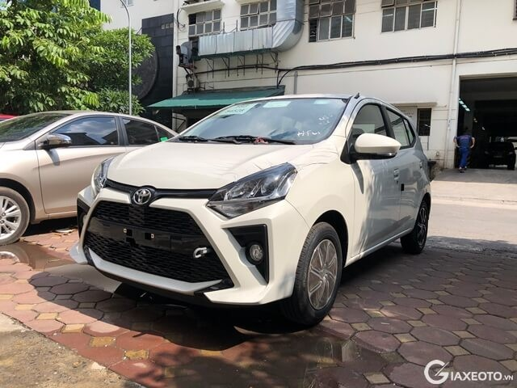

Giá xe Giá xe ô tô Toyota Wigo
Phiên bản nâng cấp Toyota Wigo facelift chính thức ra mắt tại Việt Nam vào tháng 7-2020. Wigo facelift vẫn có kích thước 3.660 x 1.600 x 1.520 mm, chiều dài cơ sở 2455mm, động cơ 1.2L công suất 88Hp, hộp số sàn 5MT và tự động 4AT. Cả 2 phiên bản Wigo 1.2GMT và 1.2GAT đã có điều hòa tự động, màn hình giải trí LCD, gương/chỉnh gập điện, camera lùi. Đối thủ của Wigo là các đối thủ trong phân khúc hatchback hạng A như Vinfast Fadil, Hyundai i10, Kia Morning.

Màu sắc: Trắng, Bạc, Đỏ, Cam, Xám, Đen, Vàng
Giá xe Toyota Vios
Toyota Vios là mẫu xe hạng nhỏ (B) dành cho cá nhân và gia đình của hãng Toyota. Nổi tiếng với giá cả rẻ nhất, kích thước gọn gàng, giúp di chuyển linh hoạt ngay cả trong phố đông, khả năng tiêu hao nhiên liệu đáng mơ ước (chỉ 5,8 lít/100km). Toyota Vios 2022 được nâng cấp với ngoại thất bắt mắt hơn, nội thất và tiện nghi với chìa khoá khởi động thông minh, Cruise Control, đầu DVD, camera lùi, cân bằng điện tử, hỗ trợ khởi hành ngang dốc, kiểm soát lực kéo... An toàn với 7 túi khí.
Xe có 6 màu: Đen, Nâu vàng, Bạc, Trắng, Đỏ, Xám.